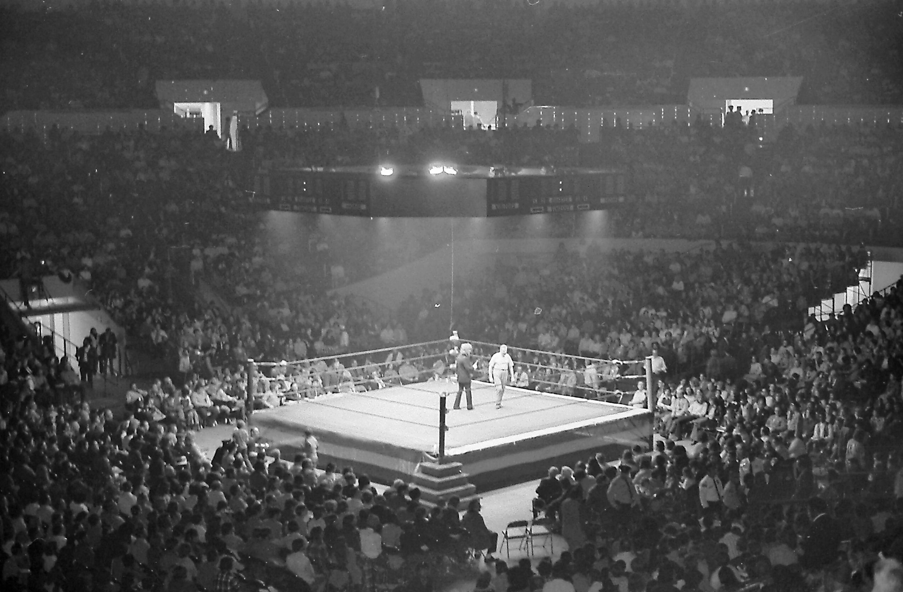

What is Professional Wrestling?
Professional wrestling, also known as pro wrestling or, if you are from my neck of the woods, 'rasslin, is a form of theater. It combines athleticism and physicality on top of story telling and drama. The performers are displayed as competitive wrestlers however, the outcome of the matches are predetermained. This is not a secret to the audience and does not take away from the experience because the point of professional wrestling is to entertain. Just like a movie or a TV show, the only difference is that pro wrestling is performed live on stage in real time. This makes it one of the most unique and interesting, as well as impressive, forms of entertainment we have ever seen.
Behind the Scenes
The pro wrestlers that perform these shows act as characters or gimmicks that consist of specific traits and personas that make the crowd either love them or hate them. These characters can be split into two categories: the babyface, who acts as the good guy, and the heel, who acts as the bad guy. The face and the heel are oftentimes put into a feud which is the story involving whatever characters are in a dispute. These feuds are brought to life through wrestling matches and verbal altercations, known as promos, in order to drive whatever story they are trying to tell forward. These matches and promos are brought to the public through promotions which pay the professional wrestlers to put on their shows. Because there are so many different shows and promotions that the wrestlers can perform on, this makes professional wrestling a very competitive and an "anything can happen" type of industry.
The Rules of Pro Wrestling
The rules in which pro wrestling contests are held differ from promotion to promotion but all exist for the same reason, to make the matches feel like a sporting contest and in order to drive their storylines forward. The performers do not have to follow an industry standard as far as rules are concerned but rather whatever needs to be accomplished that given night. While each promotion can make up their own rules, all promoters understand that the fans enjoy the contests more when following a consistent set of rules. The standard method of victory for the wrestling matches are pinning your opponent's shoulders on the mat, forcing your opponent to submit, a disqualification due to breaking the rules of the match, knocking out your opponent, or your opponent staying outside of the ring for too long. While these are typically the way we see matches end, some matches are displayed with a specific method of victory or set of rules that must be followed. This allows promotions to up the ante for certain matches in order to get the biggest reaction out of their audience.
This site is designed to take a dive into the four most popular pro wrestling promotions on the planet.